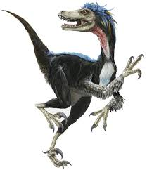

Spinosaurus aegyptiacus («lagarto egipcio de espina»), también castellanizado espinosaurio, es la única especie conocida del género extinto Spinosaurus de dinosaurio terópodo espinosáurido, que vivió a mediados del período Cretácico, hace aproximadamente 99 a 93,5 millones de años, desde el Cenomaniense hasta el Turoniense, en lo que es ahora África.12345 Este género se conoció inicialmente por los restos fósiles descubiertos en Egipto en la década de 1910 y descritos por el paleontólogo alemán Ernst Stromer.6 Los restos originales fueron destruidos durante los bombardeos de la Segunda Guerra Mundial, pero se ha recuperado material adicional a principio del siglo XXI. No existe claridad de si se trata de una o dos especies representadas por los fósiles reportados en la literatura científica. La especie más conocida es S. aegyptiacus descubierta en Egipto; sin embargo, una posible segunda especie S. maroccanus se descubrió en Marruecos. También se han encontrado restos en Argelia, Túnez y posiblemente de Níger y Libia. La mayoría de las últimas publicaciones consideran que la segunda especie e un sinónimo menor de la primera. El género contemporáneo de espinosáuridos Sigilmassasaurus también ha sido sinonimizado por algunos autores con S. aegyptiacus, aunque otros investigadores proponen que sea un taxón distinto. Otro posible sinónimo menor es Oxalaia de la Formación Alcântara en Brasil, lo que extendería el rango del génereo hasta Sudamérica.
Aunque más pequeño que otros dromeosáuridos como Deinonychus y Achillobator, Velociraptor tenía muchos rasgos anatómicos similares a ellos. Fue un carnívoro bípedo, con una cola larga y rígida, y unas garras grandes con forma de hoz en cada pata, que probablemente le facilitaba el matar a sus presas. A diferencia de otros dromeosáuridos, el velociráptor poseía un cráneo bajo y alargado, y un hocico chato, dirigido hacia arriba. Poseía patas traseras de gran longitud, lo que expresa (al igual que el nombre) su aparente gran velocidad.
Spinosaurus pudo ser el más grande de todos los dinosaurios carnívoros, más grande aún que el Tiranosaurio rex y el Giganotosaurus, a pesar de no compartir la contextura robusta de estos anteriores. Estimaciones publicadas en 2005, 2007 y 2008 sugieren que tenía 12,6 a 18 metros de longitud y 7 a 20,9 toneladas de peso.378 Nuevas estimaciones publicadas en 2014 y 2018, basadas en un espécimen más completo, respaldaron la investigación anterior y encontraron que el Spinosaurus podría alcanzar longitudes de 15 a 16 metros.91011 Las últimas estimaciones sugieren un peso de 6,4 a 7,5 toneladas.1011 El cráneo del Spinosaurus era largo, bajo y angosto, similar al de un cocodrilo moderno y tenía dientes cónicos rectos sin estrías. Habría tenido extremidades anteriores grandes y robustas con manos de tres dedos, con una garra agrandada en el primer dígito. Las espinas neurales distintivas del Spinosaurus, que eran largas extensiones de las vértebras, crecían hasta al menos 1,65 metros de largo y probablemente tenían piel que las conectaba, formando una estructura similar a una vela, como la de Dimetrodon, aunque algunos autores han sugerido que las espinas estaban cubiertas de grasa y formaban una joroba. A esta estructura se le han atribuido múltiples funciones, incluyendo termorregulación y exhibición. Los huesos de la cadera de Spinosaurus estaban reducidos y las piernas eran muy cortas en proporción al cuerpo. Su cola larga y estrecha estaba profundizada por espinas neurales altas y delgadas y cheurones alargados , formando una aleta flexible o una estructura similar a una paleta. Se cree que pudo haberse alimentado de pescado; la evidencia sugiere que permanecía tanto en el agua como en tierra, como un cocodrilo moderno.
Se sabe que Spinosaurus comía pescado, y la mayoría de los científicos creen que cazaba presas tanto terrestres como acuáticas. La evidencia sugiere que era altamente semiacuático y vivía tanto en la tierra como en el agua al igual que los cocodrilos modernos. Los huesos de las piernas de Spinosaurus tenían osteosclerosis, alta densidad ósea, lo que permitía un mejor control de la flotabilidad y la cola en forma de paleta probablemente se usaba para la propulsión bajo el agua. Vivió en un ambiente húmedo de planicies intermareales y manglares y bosques junto con muchos otros dinosaurios, así como peces, crocodilomorfos, lagartos, tortugas, pterosaurios y plesiosaurios.
Para ser un dromeosáurido, Velociraptor era relativamente pequeño, más pequeño que Deinonychus y Achillobator, los adultos alcanzaban en promedio una longitud de 1,8 metros, y 0,5 de altura a la cadera, pesando cerca de 15 kilogramos.2 El rango de tamaños varía de 1,5 y 2,07 metros de largo,34 con una masa corporal de entre 15 y 18,3 kilogramos.
Es posible de que Velociraptor estuviese cubierto de plumas, no solo plumón cobertor sino que también presentaba plumas complejas en los antebrazos67 semejantes a las rémiges de las aves actuales. Sin embargo, este curioso animal nunca pudo volar. Prominentes puntos de inserción en los antebrazos, posibles sitio de unión de las plumas del "ala" e indicador directo de una cubierta de plumas, se han informado del cúbito de un solo espécimen de Velociraptor, IGM 100/981, que representa un animal de aproximadamente 1,5 metros de largo. y 15 kilogramos de peso. El espacio de 6 protuberancias conservadas sugiere que pueden haber estado presentes 8 protuberancias adicionales, lo que da un total de 14 protuberancias en el que se desarrollaron grandes plumas secundarias, plumas de "ala" que se derivan del antebrazo.8 Sin embargo, el número de muestra se ha corregido a IGM 100/3503 y su remisión a Velociraptor puede requerir una revaluación, en espera de más estudios.9 Sin embargo, existe una fuerte evidencia filogenética de otros parientes de dromeosáuridos que indican la presencia de plumas en Velociraptor, incluidos dromeosáuridos como Microraptor o Zhenyuanlong.1011 Es posible de que Velociraptor estuviese cubierto de plumas, no solo plumón cobertor sino que también presentaba plumas complejas en los antebrazos67 semejantes a las rémiges de las aves actuales. Sin embargo, este curioso animal nunca pudo volar. Prominentes puntos de inserción en los antebrazos, posibles sitio de unión de las plumas del "ala" e indicador directo de una cubierta de plumas, se han informado del cúbito de un solo espécimen de Velociraptor, IGM 100/981, que representa un animal de aproximadamente 1,5 metros de largo. y 15 kilogramos de peso. El espacio de 6 protuberancias conservadas sugiere que pueden haber estado presentes 8 protuberancias adicionales, lo que da un total de 14 protuberancias en el que se desarrollaron grandes plumas secundarias, plumas de "ala" que se derivan del antebrazo.8 Sin embargo, el número de muestra se ha corregido a IGM 100/3503 y su remisión a Velociraptor puede requerir una revaluación, en espera de más estudios.9 Sin embargo, existe una fuerte evidencia filogenética de otros parientes de dromeosáuridos que indican la presencia de plumas en Velociraptor, incluidos dromeosáuridos como Microraptor o Zhenyuanlong.1011 Es posible de que Velociraptor estuviese cubierto de plumas, no solo plumón cobertor sino que también presentaba plumas complejas en los antebrazos67 semejantes a las rémiges de las aves actuales. Sin embargo, este curioso animal nunca pudo volar. Prominentes puntos de inserción en los antebrazos, posibles sitio de unión de las plumas del "ala" e indicador directo de una cubierta de plumas, se han informado del cúbito de un solo espécimen de Velociraptor, IGM 100/981, que representa un animal de aproximadamente 1,5 metros de largo. y 15 kilogramos de peso. El espacio de 6 protuberancias conservadas sugiere que pueden haber estado presentes 8 protuberancias adicionales, lo que da un total de 14 protuberancias en el que se desarrollaron grandes plumas secundarias, plumas de "ala" que se derivan del antebrazo.8 Sin embargo, el número de muestra se ha corregido a IGM 100/3503 y su remisión a Velociraptor puede requerir una revaluación, en espera de más estudios.9 Sin embargo, existe una fuerte evidencia filogenética de otros parientes de dromeosáuridos que indican la presencia de plumas en Velociraptor, incluidos dromeosáuridos como Microraptor o Zhenyuanlong.
 |
 |
 |
|  |  |
 |